공조냉동기계기능사 (2006-07-16 기출문제)
1과목: 공조냉동안전관리
1. 다음 사항 중 재해의 직접적인 원인에 해당되는 것은?
- 불안전한 상태
- 기술적인 원인
- 관리적인 원인
- 교육적인 원인
(정답률: 76%)

2. 프레온냉매에 대한 것 중 염려가 되는 것은?
- 폭발
- 화재
- 독성
- 금속재료의 부식
(정답률: 51%)
3. 보일러 수면계 수위가 보이지 않을 시 응급조치 사항은?
- 연료의 공급차단
- 냉수공급
- 증기보충
- 자연냉각
(정답률: 72%)
4. 산소용접 토치 취급 법에 대한 설명 중 잘못된 것은?
- 용접 팁은 흙바닥에 놓아서는 안 된다.
- 작업 목적에 따라서 팁을 선정한다.
- 토치는 기름으로 닦아 보관해 두어야 한다.
- 점화전에 토치의 안전여부를 검사한다.
(정답률: 84%)
5. 산소가 결핍되어 있는 장소에서 사용되는 마스크는?
- 송풍마스크
- 방진마스크
- 방독마스크
- 특급방진 마스크
(정답률: 83%)
6. 드릴 작업 중 칩의 제거방법으로서 가장 안전한 방법은?
- 회전시키면서 막대로 제거한다.
- 회전시키면서 솔로 제거한다.
- 회전을 중지시킨 후 손으로 제거한다.
- 회전을 중지시킨 후 솔로 제거한다.
(정답률: 85%)
7. 공구의 안전한 취급방법이 아닌 것은?
- 손잡이에 묻은 기름, 그리스 등을 닦아낸다.
- 측정공구는 부드러운 헝겊 위에 올려놓는다.
- 날카로운 공구는 공구함에 넣어서 운반한다.
- 높은 곳에서 작업시 간단한 공구는 던져서 신속하게 전달한다.
(정답률: 83%)
8. 보일러에 대한 안전도를 검사하지 않아도 되는 경우는?
- 보일러를 수리했을 때
- 보일러를 가동했을 때
- 보일러를 신설했을 때
- 제작자가 제품을 완성해 놓았을 때
(정답률: 59%)
9. 정전작업이 끝난 후 필요한 조치사항은?
- 감전 위험요인 제거
- 개로 개폐기의 시건 혹은 표시
- 단락접지
- 감독자 선임
(정답률: 46%)
10. 그라인더 작업의 안전수칙에 위배되는 것은?
- 숫돌차의 옆면에 붙여있는 종이는 떼어 내어 측면을 사용하도록 한다.
- 그라인더 커버가 없는 것은 사용을 금한다.
- 연마할 때는 너무 강하게 누르지 말고 가볍게 접촉시킨다.
- 숫돌은 작업시작 전에 결함유무를 확인한다.
(정답률: 85%)
11. 암모니아 누설검지방법이 아닌 것은?
- 유황초 사용
- 리트머스 시험지 사용
- 네슬러 시약 사용
- 헤라이드 토치 사용
(정답률: 71%)
12. 안전점검은 주목적은?
- 위험을 사전에 발견하여 시정하는데 있다.
- 법 및 기준에의 적합 여부를 점검하는데 있다.
- 안전작업 표준의 적절성을 점검하는데 있다.
- 시설, 장비의 설계를 점검하는데 있다.
(정답률: 82%)
13. 교류 용접시 표시란에 AW200이라고 표시되어 있을 때 200은 무엇을 나타내는가?
- 정격 1차 전류값
- 정격 2차 전류값
- 1차 전류 최대값
- 2차 전류 최대값
(정답률: 73%)
14. 덕성가스를 식별 조치할 때 표지판의 가스 명칭은 무슨 색으로 하는가?
- 흰색
- 노란색
- 적색
- 흑색
(정답률: 42%)
15. B급 화재(유류)에 가장 적합한 소화기는?
- 산알카리 소화기
- 강화액 소화기
- 포말 소화기
- 방화수
(정답률: 73%)
2과목: 냉동기계
16. 수평배관을 서로 연결할 때 사용되는 이음쇠는?
- 엘보우(elbow)
- 티(Tee)
- 유니온(Union)
- 캡(Cap)
(정답률: 76%)
17. 프레온계 냉매의 특성으로 거리가 먼 것은?
- 화학적으로 안정하다.
- 비열비가 작다.
- 전기 절연물을 침식시키지 않으므로 밀폐형 압축기에 적합하다.
- 수분과의 용해성이 극히 크다.
(정답률: 14%)
18. 프레온 냉동장치에 대해 다음 설명 중 옳은 것은?
- 냉매가 다량 누설하는 부위에 헬라이드 토치를 가깝게 대면 불꽃은 흑색으로 변한다.
- -50℃ ~ -70℃의 저온용 배관재료로서 이음매 없는 동관을 사용한다.
- 브라인 중에 냉매가 누설하였을 경우의 시험약품으로서 네슬러시약 용액을 사용한다.
- 포밍을 방지하기 위해 압축기에 오일필터를 사용한다.
(정답률: 42%)
19. 아래 그림과 같은 A, B의 증발기에 관한 설명 중 옳은 것은?
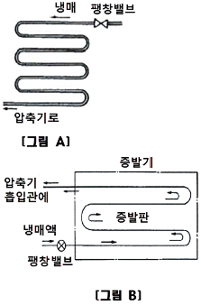
- A와 B는 건식 증발기이며, 전열은 A가 더 양호하다.
- A건식, B는 만액식 증발기이며, 전열은 B가 더 양호하다.
- A건식, B는 반만액식이며, 전열은 B가 더 양호하다.
- A와 B는 반만액식 증발기이며, 전열은 A와 B가 동등하다.
(정답률: 51%)
20. 다음의 P-h선도(Mollier선도)에서 등온선을 나타낸 것은?
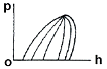
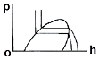
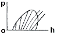
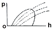
(정답률: 65%)
21. 다음 중 강관용 공구가 아닌 것은?
- 파이프 바이스
- 파이프 커터
- 드레서
- 동력 나사 절삭기
(정답률: 71%)
22. 1초 동안에 75kg·m의 일을 할 경우 시간당 발생하는 열량은 약 몇 kcal/h인가?
- 621kcal/h
- 632kcal/h
- 653kcal/h
- 675kcal/h
(정답률: 49%)
23. 동력의 단위 중 그 값이 큰 순서대로 나열이 된 것은? (단, PS는 국제 마력이고, HP 는 영국 마력임)
- 1KW > 1HP > 1PS > 1kg·m/sec
- 1KW > 1PS > 1HP > 1kg·m/sec
- 1HP > 1PS > 1KW > 1kg·m/sec
- 1HP > 1PS > 1kg·m/sec > 1KW
(정답률: 57%)
24. 암모니아 냉동기에서 불응축가스 분리기(gas-purger)의 작용에 대한 설명 중 틀린 것은?
- 응축기에서 냉매와 같이 액화되지 않은 공기를 분리시킨다.
- 분리된 냉매가스는 압축기에 흡입된다.
- 분리된 액체 냉매는 수액기로 들어간다.
- 분리된 공기는 수조를 통해 대기로 방출된다.
(정답률: 35%)
25. 축봉장치(shaft seal)의 역할로서 부적당한 것은?
- 냉매 누설 방지
- 오일 누설 방지
- 외기 침입 방지
- 전동기의 슬립(slip)방지
(정답률: 72%)
26. 가정용 백열전등의 점등 스위치는 어떤 스위치인가?
- 복귀형 스위치
- 검출 스위치
- 리미트 스위치
- 유지형 스위치
(정답률: 49%)
27. 수냉식 응축기의 능력은 냉각수 온도의 냉각수량에 의해 결정되는데, 응축기의 능력을 증대시키는 방법에 관한 사항 중 틀린 것은?
- 냉각수온을 낮춘다.
- 응축기의 냉각관을 세척한다.
- 냉각수량을 늘린다.
- 냉각수 유속을 줄인다.
(정답률: 52%)
28. 다음 중 터보냉동기에 사용하는 냉매는?
- R-11
- R-12
- R-21
- R-13
(정답률: 30%)
29. 관속을 흐르는 유체가 가스관을 나타내는 것은?
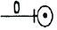
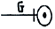
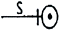
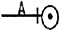
(정답률: 78%)
30. 그림은 8핀 타이머의 내부회로도이다. ⑤, ⑧ 접점을 표시한 것은 무엇인가?
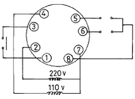
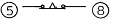
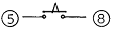
(정답률: 50%)
31. 터보 냉동기의 구조에서 불응축 가스 퍼지, 진공작업, 냉매충전, 냉매재생의 기능을 갖추고 있는 장치는?
- 플로우트 챔버 장치
- 전동장치
- 엘리미네이터
- 추기회수장치
(정답률: 47%)
32. P-h(몰리에르)선도에서 팽창밸브 통과시 발생한 플래시가스(flash gas)량을 알기 위해 필요한 선은?
- 등건조도 선
- 등비체적선
- 등온선
- 등엔트로피 선
(정답률: 26%)
33. 증발온도의 변화에 따른 비교가 맞지 않은 것은?
- 증발잠열 : 저온(-20℃) > 중온(-10℃) > 고온(0℃)
- 냉동효과 : 저온(-20℃) > 중온(-10℃) > 고온(0℃)
- 토출가스온도 : 저온(-20℃) > 중온(-10℃) > 고온(0℃)
- 압축비 : 저온(-20℃) > 중온(-10℃) > 고온(0℃)
(정답률: 25%)
34. 회전식 압축기에서 회전식 베인형의 베인은?
- 무게에 의하여 실린더에 부착한다.
- 고압에 의하여 실린더에 부착한다.
- 스프링 힘에 의하여 실린더에 부착한다.
- 원심력에 의하여 실린더에 부착한다.
(정답률: 76%)
35. 고속다기통 압축기에서 정상운전 상태로서의 유압은 저압보다 얼마나 높아야 하는가?
- 0~1.5kg/cm2
- 1.5~3.0kg/cm2
- 3.5~4.0kg/cm2
- 4.5~5.0kg/cm2
(정답률: 62%)
36. 다음 중 비등점이 가장 높은 것은? (단, 대기압에서)
- NH3
- CO2
- R-502
- SO2
(정답률: 22%)
37. 다음 그림기호 중 정압식 자동팽창 밸브를 나타내는 것은?
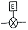
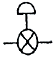
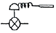
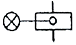
(정답률: 60%)
38. 강관의 나사이음용 이음쇠 중 벤드의 종류에 해당하지 않는 것은?
- 암수 롱 벤드
- 45° 롱 벤드
- 리터언 벤드
- 크로스 벤드
(정답률: 46%)
39. 냉동장치가 어떤 조건하에서 운전 할 때 냉동능력이 5RT이고, 압축기 동력이 5KW이면, 응축기에서 방출하여야 할 열량은? (단, 1RT=3,320kcal/h이다.))
- 123,500kcal/h
- 20,900kcal/h
- 29,000kcal/h
- 14,260kcal/h
(정답률: 38%)
40. 다음 중 고속 다기통 압축기의 장점이 아닌 것은?
- 체적효율이 좋다.
- 부품 교환 범위가 넓다.
- 진동이 비교적 적다.
- 용량에 비하여 기계가 작다.
(정답률: 20%)
41. NH3냉매를 사용하는 냉동장치에서는 열교환기를 설치하지 않는다. 그 이유는?
- 응축압력이 낮기 때문에
- 증발압력이 낮기 때문에
- 비열비가 높기 때문에
- 임계점이 높기 때문에
(정답률: 65%)
42. 제빙 장치에서 브라인의 dhse도가 -10℃이고, 결빙소요시간이 48시간일 대 얼음의 두께는 약 몇 ㎜인가?
- 253㎜
- 273㎜
- 293㎜
- 313㎜
(정답률: 38%)
43. 주어진 입력신호가 동시에 가해질 때만 출력이 나오는 회로를 무슨 회로라 하는가?
- AND
- OR
- NOT
- NAND
(정답률: 54%)
44. 다음 응축기에 대한 설명 중 옳은 것은?
- 수냉식 응축기에서는 냉각수의 흐르는 속도가 클수록 열통과율이 크지만 부식 할 염려가 있다.
- 냉각관내에 물때가 많이 끼어도 냉각수량은 변하지 않는다.
- 응축기의 안전밸브의 최소구경은 응축기의 동경에 의해서 산출된다.
- 해수를 냉각수로 사용하는 응축기에서는 동합금의 부식을 일으키기 때문에 일반적으로 스테인레스 강관을 사용한다.
(정답률: 39%)
45. 포펫트(poppet)밸브의 사용처에 관한 설명으로 가장 옳은 것은?
- 암모니아 입형저속 압축기에 많이 사용한다.
- 카 쿨러에 많이 사용한다.
- 프레온 소형 압축기에 많이 사용한다.
- 고속 압축기의 토출밸브에 사용한다.
(정답률: 32%)
3과목: 공기조화
46. 덕트 상당장이란 무엇인가?
- 덕트의 실제길이를 말한다.
- 덕트의 길이를 원형덕트로 환산한 것이다.
- 덕트 계통에서 국부 저항 손실을 같은 저항 값을 갖는 직선 덕트의 길이로 환산한 것이다.
- 덕트의 직경을 20cm로 환산한 덕트 길이다.
(정답률: 57%)
47. 냉방을 하는 경우 일반적으로 거실의 실내온도는 몇 ℃로 하는가?
- 29~32
- 25~28
- 18~23
- 16~18
(정답률: 56%)
48. 증기압력에 따라 분류한 증기난방 방식에 속하는 것은?
- 고압식
- 중력식
- 기계식
- 습식
(정답률: 34%)
49. 덕트의 부속품에 대한 설명이다. 잘못된 것은?
- 소형의 풍량 조절용으로는 버터프라이 댐퍼를 사용한다.
- 공조덕트의 분기부에는 베인형 댐퍼를 사용한다.
- 화재시 화염이 덕트내에 침입하였을 때 자동적으로 폐쇄되도록 방화댐퍼를 사용한다.
- 화재 초기시 연기감지로 다른 방화구역에 연기가 침입하는 것을 방지하는 방연댐퍼를 사용한다.
(정답률: 39%)
50. 다음 공조방식 중 에너지 손실이 가장 큰 공조빙식은?
- 2중 덕트방식
- 각층 유닛방식
- F.C 유닛방식
- 유인 유닛방식
(정답률: 62%)
51. 다음 중 공기조화의 정의를 가장 바르게 설명한 것은?
- 일정한 공간의 요구에 알맞은 온도를 적절히 조정하는 것
- 일정한 공간의 습도를 조정하는 것
- 일정한 공간의 청결도를 조정하는 것
- 일정한 공간의 요구에 알맞은 온도, 습도, 청정도, 기류속도 등을 조절하는 것
(정답률: 81%)
52. 저온수 난방방식의 방열기 표준방열량으로 옳은 것은?
- 450kcal/m2h
- 550kcal/m2h
- 650kcal/m2h
- 750kcal/m2h
(정답률: 42%)
53. 보일러를 구성하는 3대요소가 아닌 것은?
- 세정장치
- 보일러 본체
- 부속기기
- 부속장치
(정답률: 75%)
54. 강제순환식 난방에서 실내손실 열량이 3,000kcal/h이고, 방열기 입구수온이 50℃, 출구온도가 42℃일 때 펌프 용량은 몇 kg/h인가?
- 254kg/h
- 313kg/h
- 342kg/h
- 375kg/h
(정답률: 37%)
55. 최대 열부하에 대한 설명으로 옳은 것은?
- 실내에서 발생하는 부하를 1년간에 걸쳐 합계한 부하
- 환기를 위해 외기를 공조기로 도입하여 실내의 온습도상태까지 냉각·감습하거나, 가열·가습하는데 필요한 부하
- 실내에서 발생되는 부하가 일주일 중에서 가장 큰 값으로 되는 시각의 부하
- 공조 설비의 용량을 결정하기 위하여 연중 가장 추운 날 또는 가장 더운 날로 가정된 설계용 외기조전을 이용하여 계산된 부하
(정답률: 47%)
56. 냉수코일에 대한 설명 중 옳지 않은 것은?
- 물의 속도는 일반적으로 1m/s/전후이다.
- 코일을 통과하는 공기의 풍속은 7~8m/s정도이다.
- 입구수온과 출구수온의 차이는 일반적으로 5℃전후이다.
- 코일의 설치는 관이 수평으로 놓이게 한다.
(정답률: 39%)
57. 다음 중 라인형 취출구에 해당되지 않는 것은?
- 캄라인형
- 슬롯 라인형
- T-바형
- 노즐형
(정답률: 45%)
58. 건구온도 20℃, 절대습도 0.008kg/kg'(DA)인 공기의 비엔탈피는 약 얼마인가? (단, 공기의 정압비열(Cp)=0.24kcal/kg℃, 수증기의 정압비열(Cp)=0.441kcal/kg℃이다.)
- 7.0kcal/kg(DA)
- 8.3kcal/kg(DA)
- 9.6kcal/kg(DA)
- 11.0kcal/kg(DA)
(정답률: 35%)
59. 다음 중 습공기 선도의 종류에 속하지 않는 것은?
- h-x 선도
- t-x 선도
- t-h 선도
- p-h 선도
(정답률: 47%)
60. 다음 그림에서 설명하는 공기조화방식은?
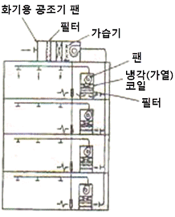
- 단일 덕트 방식
- 이중 덕트 방식
- 가면 풍량 방식
- 각층 유닛 방식
(정답률: 76%)